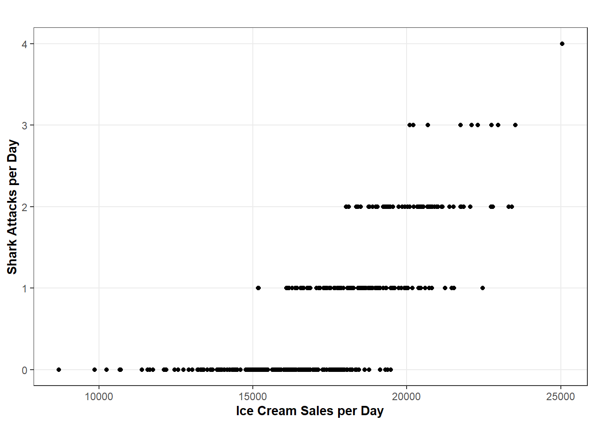
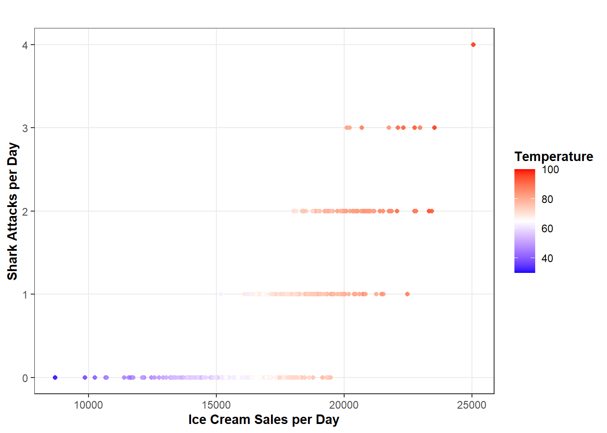
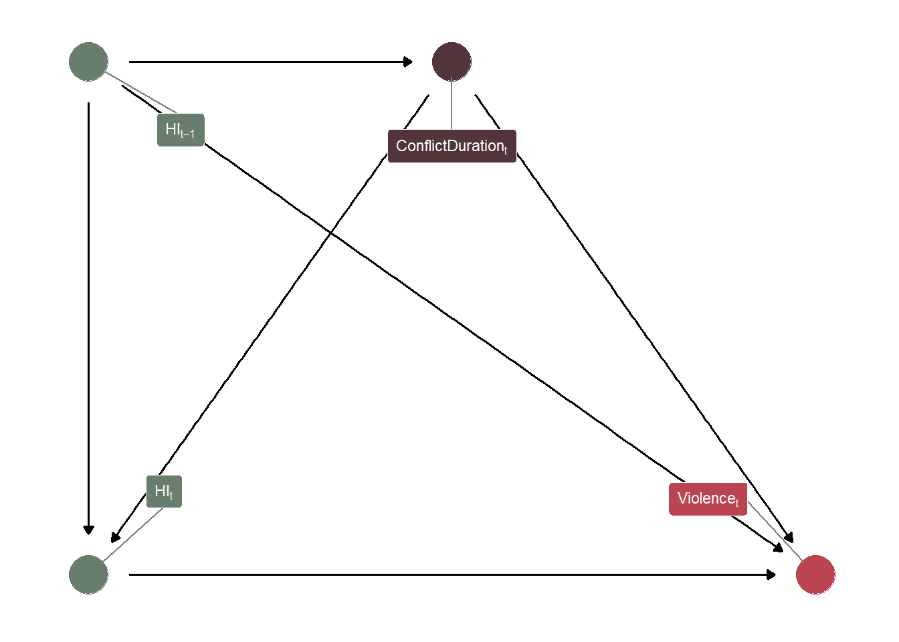

Learn the basics to making causal inferences with panel/longitudinal data.
Published
July 8, 2024
Code
# Load Librariespacman::p_load("dplyr", # Data Manipulation"ggplot2", # Data Visualization"ggtext", # Labels"dagitty", # Creating DAGs"ggdag", # Plotting DAGsinstall =FALSE)# Define a Custom Theme - Taken From Andrew Heiss's Blogsblog_theme <-function() {theme_bw() +# Start with theme_bwtheme(panel.grid.minor =element_blank(),plot.background =element_rect(fill ="white", color =NA),plot.title =element_text(face ="bold"),axis.title =element_text(face ="bold"),strip.text =element_text(face ="bold"),strip.background =element_rect(fill ="grey80", color =NA),legend.title =element_text(face ="bold") )}
Introduction
One of the primary goals of science is to examine causal relationships. Anytime a researcher asks a question like, “how does \(X\) impact \(Y\)?” or “do changes in \(X\) cause a change in \(Y\)?” that researcher is at the very beginning of a causal research design. Unfortunately, asking causal questions is a lot easier than answering them.1
It would be great if a researcher could simply look for a correlation between \(X\) and \(Y\) and determine whether \(X\) causes a change in \(Y\). However, inferring causation from a bi-variable test or a scatterplot is very, very poor practice. One of the biggest reasons why we can’t do this is because of confounding, which refers to things that cause some change in both \(X\) and \(Y\) (in notation: \(X\)\(\leftarrow\)\(Z\)\(\rightarrow\)\(Y\)) and, if not accounted for, will result in a misleading picture on the relationship between \(X\) and \(Y\). A somewhat canonical example to illustrate the problem of un-adjusted confounding is the relationship between ice cream sales (\(X\)) and shark attacks (\(Y\)).
Code
# Create Simulated Datadays <-365# Number of Days in a Yeartemp <-pmin(pmax(rnorm(days, mean =70, sd =10), 30), 100) # Temperatureshark <-0.5+0.1* (temp -70) +rnorm(days, mean =0.5, sd =0.5) # Shark Attacksshark <-pmax(shark, 0) # Lowest Shark Attacks Can Go Is Zeroshark <-floor(shark) # Round This Down (There Can't Be Any 0.5 Shark Attacks)ice <-15000+250* (temp -70) +rnorm(days, mean =2500, sd =500) # Ice Cream Sales with Random Variationsim <-data.frame(days, temp, shark, ice) # Combine Data# Create a Scatter Plotggplot(sim, aes(x = ice, y = shark)) +geom_point() +labs(x ="Ice Cream Sales per Day", y ="Shark Attacks per Day", title ="") +ylim(0, 4) +blog_theme()

Correlation Between Shark Attacks and Ice Cream Sales
This plot is why we don’t infer causation from a bi-variable relationship. (This plot also uses totally fake data and it’s only here to serve as a theoretical example… Sharks really don’t attack this many people annually, but I really don’t like them so ¯\_(ツ)_/¯ ). If we did, then we could conclude one should never risk swimming in the ocean after consuming ice cream. However, as you can see in the following graph, once we take temperature into account, the ice cream sales-shark attack-pipeline theory is certainly much less compelling. However, the point remains. If we were to remove all of the variation in the relationship between \(X\) and \(Y\) that is explained by the confounders, then the bi-variable correlation between \(X\) and \(Y\) would be the causal effect.2
Code
ggplot(sim, aes(x = ice, y = shark, color = temp)) +geom_point() +labs(x ="Ice Cream Sales per Day", y ="Shark Attacks per Day", title ="", color ="Temperature") +scale_color_gradientn(colors =c("blue", "white", "red"), limits =c(30, 100)) +ylim(0, 4) +blog_theme()

Correlation Between Shark Attacks and Ice Cream Sales Adjusted for Temperature
In an ideal world, a researcher is able to utilize a randomized experiment to answer their causal question. Randomized experiments are incredibly valuable because the “treatment” (also known as “\(X\)”, the independent variable of interest, the exposure, etc.) is randomly allocated across the participants/units in the study. If treatment is randomly allocated then we’ve taken care of our confounders because \(Z\)\(\rightarrow\)\(X\) is no longer true. The only thing that impacts \(X\) is pure chance (randomization). Sure, participants/units have characteristics that might make them more or less likely to respond to treatment in a certain way. But we don’t need to control for this because those same individuals are just as likely to be in the control group because pure chance determined their treatment status. Therefore, while randomization does not allow us to estimate causal effects for each individual within a study, we can estimate causal effects on average for the “populations” they represent by comparing the average outcome (\(Y\)) between the two groups (treated and control).
But experiments are pretty rare and are practically hard to pull off. They take time to design and to administer. It’s certainly a lot easier to just download your favorite data set and plug variables into a regression model.3 In some cases, experiments are impossible to pull off. For example, my academic background is in the study of armed conflict and violence. If I want to run an experiment to evaluate the effect of democracy on civil violence… well, you can see where that gets very tricky. How am I supposed to randomly allocate which countries get to be democracies and which don’t? And this leads to the third point. Even if this bizarre experiment was possible and I had the political clout to pull that off, it would certainly not be very ethical.
So, absent experiments, we find ourselves in a less-than-desirable state. Because now, we have to manually identify, collect, and appropriately control for all confounders that the experiment otherwise would have taken care of for us via randomization. This really is not a small task at all if you sit and think about it. How do I know that I’ve identified all of the confounders? What if I can’t measure some of them? If I omit a confounder (or several) how can I know how much of an impact their omission had on my analysis? What if I control for a variable that isn’t a confounder? These are great questions and they highlight the reality that confounding will be a problem in your design which renders your original causal question incredibly difficult to reliably answer. I won’t be covering these problems in this blog, but tools like directed acyclic graphs (DAGs), simulation, and sensitivity analyses are very helpful and I would highly recommend spending some time to learn about them (although, none of these tools solve the problem of un-adjusted confounding and plugging as many control variables into your regression is almost always going to harm more than it will help).4
Rather than spending time on these serious problems, I am going to introduce another problem that is often under-appreciated and less discussed than other prominent topics in the causal inference literature. It turns out that when you’re examining multiple units (individuals, firms, schools, countries, etc.) over time, the analysis gets a bit more complicated and requires more robust solutions than what are often employed.
How Time Complicates Causal Inferences
So that we keep this conversation grounded, I am going to present a running example that I’m familiar with from my background in the civil conflict literature. Particularly, let’s consider the immediate and delayed effects that humanitarian interventions might have on violence. The relationship between humanitarian intervention and violence could be confounded by a lot of things (conflict duration, the number of other external actors, the military capacity of warring parties, etc.). For now, we are going to focus on one confounding relationship:
Here, the “\(_t\)” subscript refers to any time period (for example, 2010, 1998, 2023, whatever). If you’re curious about the logic of this confounding relationship, it is fairly simple. The longer a conflict goes on, the more opportunities exist for an external actor to launch a humanitarian intervention. Further, a humanitarian intervention may be viewed as a method to resolve a conflict stagnating into a protracted stalemate. In addition, most of the heaviest periods of violence within civil conflicts take place at the beginning of a conflict, which is likely a function of resources being plentiful at the start of a conflict and the lack of attrition.
In a “static” cross-sectional design, we could simply control for conflict duration and “be done with it”. However, most conflict research is longitudinal/panel, meaning that (in this example) we track humanitarian interventions, violence, and conflict duration for the same countries over several years. While the leap from the cross-sectional case to the longitudinal one may not initially appear to make a consequential difference for causal inference, a major complication arises when our confounders are allowed to vary over time. To demonstrate why this is a problem, consider the following DAG:
Code
# Specify Node Infonode_info <-tribble(~name, ~label, ~x, ~y,"X", "HI[t]", 0, 0,"Y", "Violence[t]", 1, 0,"Z", "ConflictDuration[t]", 0.5, 1,"X_lag", "HI[t-1]", 0, 1)# Creating a Node Labels Objectnode_labels <- node_info$labelnames(node_labels) <- node_info$name# Creating and Tidying the DAG Objecttvc_dag <-dagify( X ~ X_lag + Z, Y ~ Z + X + X_lag, Z ~ X_lag,exposure ="X",outcome ="Y",labels = node_labels,coords = node_info) %>%tidy_dagitty()# Assign Types for Coloringtvc_dag <- tvc_dag %>%mutate(type =case_when( name %in%c("X", "X_lag") ~1, name =="Y"~2, name =="Z"~3 ) )# Plot the DAGggplot(tvc_dag, aes(x = x,y = y,xend = xend,yend = yend,)) +geom_dag_edges() +geom_dag_point(aes(color =as.factor(type)), size =10) +geom_dag_label_repel(aes(label = label, fill =as.factor(type)),color ="white",fontface ="bold",size =3,parse =TRUE,label.padding =unit(0.35, "lines"), force =2, box.padding =2.5 ) +scale_color_manual(values =c("#687d6b", "#bb4452", "#513538")) +scale_fill_manual(values =c("#687d6b", "#bb4452", "#513538")) +guides(color ="none", fill ="none") +theme_dag()

DAG Showing Time-Varying Confounding
This DAG just incorporates two time periods (\(t\) and \(t-1\)). You could add however many time periods that you wanted if it was relevant for your research (\(t-2\), \(t+1\), etc.). While this example is nothing too complicated, do you notice the problem? Again, if I want to estimate the causal effect of humanitarian interventions on violence, I need to control for conflict duration because it clearly confounds the relationship between Humanitarian Intervention\(_t\) and Violence\(_t\). However, if I wanted to estimate the causal effect of lagged humanitarian intervention on violence (in an attempt to answer whether it takes time for humanitarian interventions to “kick in”), then I could not do so in the same model. I also strongly emphasize that dynamic effects (those beyond the immediate treatment\(_t\)\(\rightarrow\) outcome\(_t\) relationship) are very important. I can attest to this in the conflict management research, where we expect that certain strategies may increase violence in the short-term but promote peace in the long-term or, it may be the case that some strategies are “band-aid” approaches where violence may decrease in the short-term, but increase violence in the long-run. These questions are super important to explore and throwing treatment\(_t\) and treatment\(_{t-1}\) in the same regression model is going to lead to biased results!
While controlling for Conflict Duration\(_t\) “de-confounds” the Humanitarian Intervention\(_t\)\(\rightarrow\) Violence\(_t\) relationship, it biases the Humanitarian Intervention\(_{t-1}\)\(\rightarrow\) Violence\(_t\) relationship because part of the effect of past humanitarian interventions on violence is filtered through the pacifying effect that past humanitarian interventions should have had by decreasing the duration of conflict. In plainer English, including Humanitarian Intervention\(_t\), Humanitarian Intervention\(_{t-1}\) and Conflict Duration\(_t\) in the same model means that the model output for Humanitarian Intervention\(t-1\) could not be interpreted as an unbiased causal effect on violence because it is removing part of the effect that past humanitarian interventions had on violence, mediated through current conflict duration.
So, operating under standard adjustment models, controlling for one variable de-biases one relationship while biasing the other and abstaining from controlling for one variable does vice versa. Damned if you do and damned if you don’t. What are you to do in these situations? As it turns out, there’s an entire class of models/approaches designed to address the problem that time-varying confounding (the values of confounders changing over time) creates. However, before diving into those methods (which will not be discussed in great detail in this blog), it is worth addressing the assumptions that such approaches are built on for making causal inferences.
Identification
In the causal inference literature, identification refers to the ability of a researcher’s design to identify the causal effect of interest. Identification is a very important concept because, as our shark attacks-ice cream sales examples shows, establishing causality is a lot harder than just looking at data. Establishing causation requires a host of assumptions about the design and data used in a study. Our approach to identifying the causal effect of interest is referred to as the identification strategy. An identification strategy consists of both theoretical and statistical components. A researcher must assert their assumptions that should, when satisfied, identify the causal effect and outline their statistical methodology to estimate their desired result (along with being very transparent when a key assumption is being violated and the consequences of this violation).
A key assumption for making causal inferences is that there is no unmeasured confounding. So long as there remains one confounder not accounted for in our analysis, a part of the association between our treatment and outcome will be biased by the unmeasured confounder. This bias could be massive or it could be fairly inconsequential… and we don’t know how important this unmeasured confounder is because… we didn’t measure the confounder. We could fail to incorporate the confounder into the analysis for several reasons. For example, we may not be able to measure the confounder, or the confounder is incorporated but it has severe measurement error, or the confounder is incorporated but its functional form is incorrectly specified, or we simply did not think to include it in the analysis. There is no fancy statistical magic to know whether one has identified all confounders. For researchers utilizing an identification strategy that relies on the researcher to identify all confounders, the best one can do it to draw a DAG and make assumed confounding relationships explicit while also executing sensitivity analyses to examine how much one’s results would change under varying degrees of hypothetical unmeasured confounding bias.
While the burden of specifying all confounding relationships is never ideal, it is often the only option for many (if not most) research questions. As mentioned earlier, experiments are hard to implement in many cases and sources of natural randomization to exploit are rare. So, in both the cross-sectional and panel data cases, we are left with the task of ensuring (as best that we can) no unmeasured confounding. However, what is pretty interesting is that different strategies follow from this assumption within the dynamic causal inference context. I myself did not appreciate the distinction between the two discussed below until relatively recently. While both of the following identification strategies rely on no unmeasured confounding, they go about framing and addressing this in a unique way, which will inform your usage of different dynamic causal inference methodologies.
Strict Exogeneity and Sequential Ignorability
Of the two identification strategies mentioned here, strict exogeneity is perhaps the more well-known of the two. The basic idea of strict exogeneity is that the potential outcomes are independent of the treatment assignment, conditioned on confounders. Effectively, once the analysis has been conditioned on confounders, the treatment assignment can be treated as-if random. If our treatment assignment is as-if random, then the treatment assignment is independent of the potential outcomes (the observed factual and unobserved counterfactual outcomes for each observation). All of this is basically a long-winded way of saying, “if you adjust for all confounders, then your estimate is a causal effect”.
Code
# Specify Node Infonode_info <-tribble(~name, ~label, ~x, ~y,"X", "Treatment", 0, 0,"Y", "Outcome", 1, 0,"Z_endog", "Assignment[Endogenous]", 0.5, 1,"Z_exog", "Assignment[Exogenous]", 0, 1)# Creating a Node Labels Objectnode_labels <- node_info$labelnames(node_labels) <- node_info$name# Creating and Tidying the DAG Objectindep_dag <-dagify( X ~ Z_endog + Z_exog, Y ~ X + Z_endog,exposure ="X",outcome ="Y",labels = node_labels,coords = node_info) %>%tidy_dagitty()# Assign Types for Coloringindep_dag <- indep_dag %>%mutate(type =case_when( name =="Z_endog"~4, name =="Z_exog"~3, name =="Y"~2, name =="X"~1 ) )# Plot the DAGggplot(indep_dag, aes(x = x,y = y,xend = xend,yend = yend, )) +geom_dag_edges() +geom_dag_point(aes(color =as.factor(type))) +geom_dag_label_repel(aes(label = label, fill =as.factor(type)),color ="white",fontface ="bold",box.padding =2.5,force =2,parse =TRUE ) +scale_color_manual(values =c("#687d6b", "#bb4452", "#032609", "#513538")) +scale_fill_manual(values =c("#687d6b", "#bb4452", "#032609", "#513538")) +guides(color ="none", fill ="none") +theme_dag()
DAG Showing Treatment Independent of Potential Outcomes
Now, adjusting for all confounders is very difficult, which explains why methods such as fixed effects, two-way fixed effects, or difference-in-differences are such popular designs operating under strict exogeneity because, by design, they adjust for all time-*invariant* confounders (confounders whose values do not change over time for each unit in the study… these are things like sex, geography, race, etc.). While these methods still rely on the specification of time-*varying* confounders, being able to automatically handle all time-invariant confounding is certainly very powerful! Why doesn’t everyone use this for their panel/longitudinal designs?
Well, an often overlooked aspect of the assumption of strict exogeneity is the assumption that, following adjustment of confounders, treatment can be treated as-if randomly assigned at one time period for a given unit. This implies that past treatment and outcome values should not be influencing current treatment or outcome values. This is a hard assumption to satisfy if we know that treatment in a given time period is going to have direct effects on things other than \(Y_t\). If feedback loops exist (such as \(X_t\)\(\rightarrow\)\(Y_t\)\(\rightarrow\)\(X_{t+1}\)\(\rightarrow\)\(Y_{t+1}\)), the treatment assignment cannot be considered as-if random for later time periods because the feedback loop is impacting the treatment assignment. Indeed, as Imai and Kim (2019) note, strict exogeneity actually places several great burdens on the data, assuming that (in addition to no unmeasured time-varying confounders), 1) past outcomes do not directly affect current outcomes, 2) past treatment do not directly affect current outcomes, and 3) past outcomes do not directly affect current treatment.
Like strict exogeneity, the assumption of ignorability states that a causal effect estimate is unbiased if, conditioned on the confounders, the treatment assignment mechanism is independent of the potential outcomes. If it is, then the other things that impact the treatment assignment can be ignored because they do not bias the causal interpretation of treatment. Sequential ignorability is an extension of this approach to the panel/longitudinal data context. Under sequential ignorability, the treatment assignment is independent of the potential outcomes once all confounders and prior treatment and outcome histories are adjusted for. This latter addition relaxes several of the often unrealistic assumptions imposed by strict exogeneity.
Specifically, an advantage of the sequential ignorability approach is its ability to formally incorporate past information and feedback loops, rather than assuming them away, which are often an inescapable reality of panel/longitudinal data. This incorporation of past information allows for a variety of dynamic questions to be explored, such as the estimation of direct lagged effects. However, how that estimation works in practice is a topic better suited for later blog posts which discuss specific methods that operate under sequential ignorability.
It is important to note that sequential ignorability is no magic trick, and there are costs associated with the relaxation of the assumptions imposed by strict exogeneity. For example, unlike methods that rely on strict exogeneity, which can “get away” with not specifying time-invariant confounders, researchers using methods that operate under sequential ignorability must specify all (including all time-invariant) confounders. Given this trade-off, the choice to operate under strict exogeneity or sequential ignorability should be informed by your research question (are estimating direct lagged effects of primary interest?), the data generating process (are feedback loops present in your data?), and practical limitations (do you realistically expect to be able to account for all time-invariant confounders?)
Planned Expansions for This Series
I plan to follow up this blog post with an expansive series of a lot of the methods that exist out there for researchers working with panel/longitudinal data under either strict exogeneity or sequential ignorability. This includes: panel matching, marginal structural models, structural nested mean models (maybe), synthetic controls, fixed effects, random effects, difference-in-differences, and machine learning-based solutions. Each of these would rightly deserve their own separate blog post and, in all honesty, I will need significant time to prepare a sort of “tutorial” on what they are and how to apply them.
I hope this blog was informative for you though! And if I failed to make a point clear/you just are interested in learning more about this topic, I would recommend the following readings:
Note: if you are already familiar with the core concepts of causal inference, feel free to skip down to the section where I start discussing time and why it messes things up.↩︎
Well… kind of. There are actually a lot of other assumptions that you would need to check for first, like positivity, SUTVA, no measurement error, etc. (which will not be covered here in sufficient detail if you are not familiar with these topics). If you’re not super familiar with these topics, I highly recommend checking out Chatton and Rohrer 2024.↩︎
I do not condone this attitude… never treat your regressions or research designs this way.↩︎